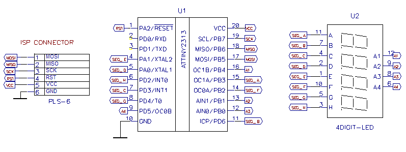

Здесь описан контроллер четырёхразрядного семисегментного индикатора с управлением по i2c.
Обычно семисегментные индикаторы подключают напрямую к микроконтроллеру. При нехватке ног ставят всякие расширители, счётчики и проч. А если индикаторов несколько? Можно конечно поставить много расширителей, регистров..
Я решил пойти другим путём. Пусть маленькая тинька будет контроллером семисегментного индикатора, управляет яркостью и проч. А главному контроллеру надо будет только отправить число, которое надо отобразить. При наличии нескольких семисегментников в системе - это будет очень неплохой разгрузкой главного контроллера.
Ещё одно соображение - конструктивного плана. Очень легко вынести индикаторы на нужные места, при этом кабель связи будет содержать всего 4 провода - питание и i2c. Я уж не говорю об упрощении топологии печатной платы.
Мне было лень делать печатку, потому собрал в стиле «dead bug»:
Залил всё «китайскими соплями»:
Вот результат:
Схема содержит тиньку 2313, семисегментник и разъём. У tiny2313 очень удачно совпадают ноги для программирования и i2c. Поэтому устройство подключается при помощи разъёма внутрисхемного программирования.

Как видно, осталось свободными 2 ноги, так что можно сделать 6 разрядов. Если использовать ещё и ногу MISO, то 7. А если и RESET - то дотянем до восьми. Но не уверен, что хватит яркости, мультиплексирование-то — посегментное.
Пока есть 2 команды:
#define COMMAND_SET_BRIGHTNESS (0x10) #define COMMAND_SET_DATA (0x11)
Первая команда имеет один параметр размером в байт и служит для задания яркости. Значение параметра может быть 0 - 7. Чем больше, тем ярче.
Вторая команда имеет один параметр размером в слово и служит для задания отображаемого значения. Значение параметра может быть 0 - 9999. Старший байт слова передаётся первым.
Надо бы сделать ещё команду для отображения десятичной точки. Потом сделаю. Ну и, наверное, желательна команда для записи произвольных значений всех сегментов. Тоже после.
Программа использует посегментное мультиплексирование. Это позволило обойтись безо всяких транзисторов-резисторов. Плюс к тому, можно использовать семисегментники как с общим анодом, так и с общим катодом. Потребуется только небольшая корректировка программы.
Процедуры для работы с i2c я взял из атмелевской аппноты AVR312. Адрес i2c задан в прошивке жёстко (0x10). Для смены адреса надо перекомпилировать. Можно подумать над программным заданием адреса, но мне кажется, что это лишнее.
P.S. Кстати, фирма Maxim выпускает нечто подобное - контроллеры 8 семисегментных индикаторов с SPI (MAX7219). Но цена...
© AHTOXA, 2008.